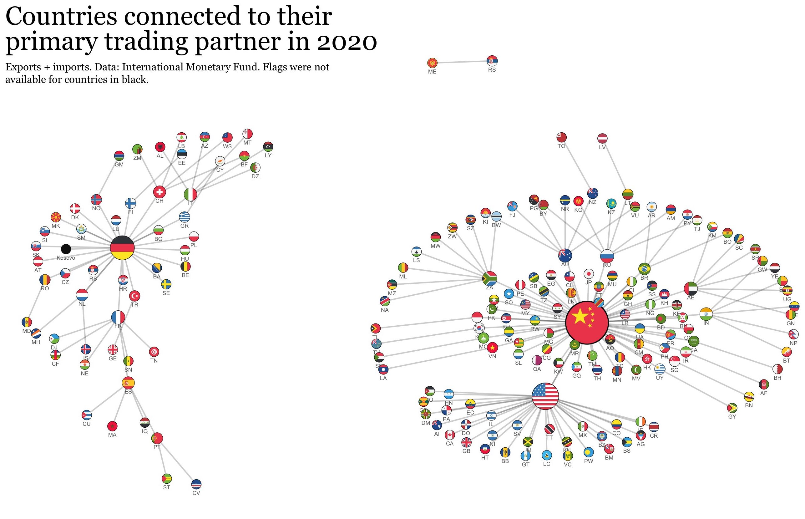
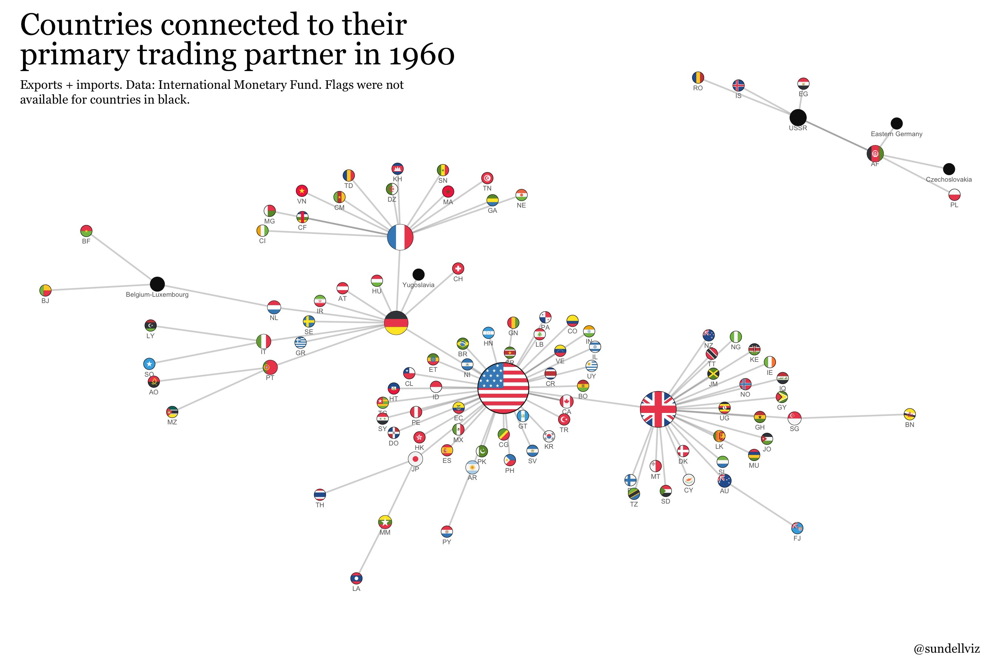

Références : Huth, P. & Russett, B. (1984). What makes deterrence work? Cases from 1900 to 1980 World Politics, 36(4), 496–526.
Dissuasion : « La menace de recourir à la force en réponse, comme moyen d’empêcher l’usage initial de la force par quelqu’un d’autre. » (p. 496)
Dissuasion étendue : « La dissuasion peut viser à empêcher une attaque contre soi-même, ou une attaque contre une autre partie – en politique internationale, un allié, un État client ou un neutre amical. » (p. 496)
Dissuasion générale : « Opposants qui maintiennent des forces armées pour réguler leur relation, même si aucun des deux n’est proche de lancer une attaque. » (p. 496)
Dissuasion immédiate : « Situation où au moins une partie envisage sérieusement une attaque, tandis que l’autre met en place une menace de représailles pour l’en empêcher. » (p. 496)
Dissuasion générale : « L’absence d’une attaque n’atteste pas nécessairement du succès de la dissuasion» (p. 497)
Dissuasion immédiate (1) Plus facile à identifier (2) Plus importante en termes politique : « Si nous ne savons pas comment la dissuasion fonctionne lorsqu’elle est le plus nécessaire (…) les politiques conçues pour assurer la dissuasion générale risquent de reposer sur des idées incomplètes ou trompeuses sur le fonctionnement de la dissuasion, et la théorie de la dissuasion sera faible. » (p. 497)
Les responsables d’un État (que nous appellerons « l’attaquant ») envisagent d’attaquer un État (« protégé ») qui est formellement allié ou considéré comme important par un troisième État (« défenseur »).
Des responsables clés de l’État défenseur en prennent conscience.
Reconnaissant qu’une attaque est une possibilité distincte, les responsables de l’État défenseur, soit explicitement, soit par un mouvement de forces militaires, menacent d’utiliser la force de représailles dans le but de prévenir l’attaque.
| Case | Year(s) | Attacker | Protégé | Defender | Outcome |
|---|---|---|---|---|---|
| 1 | 1902/3 | Germany | Venezuela | United States | Success |
| 2 | 1904 | Russia | Korea | Japan | Failure |
| 3 | 1905/6 | Germany | Morocco | France | Success |
| 4 | 1905/6 | Germany | France | Britain | Success |
| 5 | 1908 | Turkey | Persia | Russia | Success |
| 6 | 1908/9 | Russia/Serbia | Austria-Hungary | Germany | Success |
| 7 | 1908/9 | Austria-Hungary/Germany | Serbia | Russia | Failure |
| 8 | 1911 | Italy | Tripoli | Turkey | Failure |
| 9 | 1911 | Germany | Morocco | France | Success |
| 10 | 1911 | Germany | France | Britain | Success |
| 11 | 1912 | Serbia | Albania | Austria-Hungary | Failure |
| 12 | 1912 | Austria-Hungary | Serbia | Russia | Success |
| 13 | 1912 | Russia/Serbia | Austria-Hungary | Germany | Success |
| 14 | 1913 | Rumania | Bulgaria | Russia | Success |
| 15 | 1913 | Bulgaria | Greece | Serbia | Failure |
| 16 | 1913 | Serbia | Albania | Austria-Hungary | Success |
| 17 | 1914 | Austria-Hungary/Germany | Serbia | Russia | Failure |
| 18 | 1914 | Russia/Serbia | Austria-Hungary | Germany | Failure |
| 19 | 1914 | Germany/Austria-Hungary | Russia | France | Failure |
| 20 | 1914 | Germany | Belgium | Britain | Failure |
| 21 | 1920 | Soviet Union | Iran | Britain | Failure |
| 22 | 1927 | Yugoslavia | Albania | Italy | Success |
| 23 | 1935 | Italy | Ethiopia | Britain | Failure |
| 24 | 1936 | Japan | Outer Mongolia | Soviet Union | Success |
| 25 | 1938 | Germany | Czechoslovakia | Britain/France | Failure |
| 26 | 1938/39 | Italy | Tunisia | France | Success |
| 27 | 1939 | Japan | Outer Mongolia | Soviet Union | Failure |
| 28 | 1939 | Germany | Poland | Britain/France | Failure |
| 29 | 1940 | Soviet Union | Finland | Germany | Success |
| 30 | 1946 | Soviet Union | Iran | United States | Success |
| 31 | 1947 | Soviet Union | Turkey | United States | Success |
| 32 | 1948/49 | Soviet Union | W. Berlin/W. Germany | United States | Success |
| 33 | 1950 | United States | North Korea | China | Failure |
| 34 | 1954/55 | China | Taiwan/Islands | United States | Success |
| 35 | 1957 | Turkey/United States | Syria | Soviet Union/Egypt | Success |
| 36 | 1957 | Egypt/Syria/Soviet Union | Turkey | United States | Success |
| 37 | 1958 | China | Taiwan/Islands | United States | Success |
| 38 | 1961 | Iraq | Kuwait | Britain | Success |
| 39 | 1961 | India | Goa | Portugal | Failure |
| 40 | 1961 | Soviet Union | W. Berlin/W. Germany | United States | Success |
| 41 | 1962 | India | Nepal | China | Success |
| 42 | 1962 | North Vietnam | Thailand | United States | Success |
| 43 | 1963/64 | Indonesia | Malaysia | Britain | Failure |
| 44 | 1964 | Turkey | Cyprus | Greece | Failure |
| 45 | 1964/65 | North Vietnam | South Vietnam | United States | Failure |
| 46 | 1965 | India | Pakistan | China | Failure |
| 47 | 1966/67 | Turkey | Cyprus | Greece | Failure |
| 48 | 1967 | Israel | Syria | Egypt | Failure |
| 49 | 1970 | Syria | Jordan | Israel | Success |
| 50 | 1973 | Soviet Union | Israel | United States | Success |
| 51 | 1974 | Turkey | Cyprus | Greece | Failure |
| 52 | 1975 | Morocco | Western Sahara | Spain | Success |
| 53 | 1976/77 | Guatemala | Belize | Britain | Success |
| 54 | 1978/79 | Tanzania | Uganda | Libya | Failure |
| Case | Year(s) | Attacker | Protégé | Defender | Outcome |
|---|---|---|---|---|---|
| 2 | 1904 | Russia | Korea | Japan | Failure |
| 7 | 1908/9 | Austria-Hungary/Germany | Serbia | Russia | Failure |
| 8 | 1911 | Italy | Tripoli | Turkey | Failure |
| 11 | 1912 | Serbia | Albania | Austria-Hungary | Failure |
| 15 | 1913 | Bulgaria | Greece | Serbia | Failure |
| 17 | 1914 | Austria-Hungary/Germany | Serbia | Russia | Failure |
| 18 | 1914 | Russia/Serbia | Austria-Hungary | Germany | Failure |
| 19 | 1914 | Germany/Austria-Hungary | Russia | France | Failure |
| 20 | 1914 | Germany | Belgium | Britain | Failure |
| 21 | 1920 | Soviet Union | Iran | Britain | Failure |
| 23 | 1935 | Italy | Ethiopia | Britain | Failure |
| 25 | 1938 | Germany | Czechoslovakia | Britain/France | Failure |
| 27 | 1939 | Japan | Outer Mongolia | Soviet Union | Failure |
| 28 | 1939 | Germany | Poland | Britain/France | Failure |
| 33 | 1950 | United States | North Korea | China | Failure |
| 39 | 1961 | India | Goa | Portugal | Failure |
| 43 | 1963/64 | Indonesia | Malaysia | Britain | Failure |
| 44 | 1964 | Turkey | Cyprus | Greece | Failure |
| 45 | 1964/65 | North Vietnam | South Vietnam | United States | Failure |
| 46 | 1965 | India | Pakistan | China | Failure |
| 47 | 1966/67 | Turkey | Cyprus | Greece | Failure |
| 48 | 1967 | Israel | Syria | Egypt | Failure |
| 51 | 1974 | Turkey | Cyprus | Greece | Failure |
| 54 | 1978/79 | Tanzania | Uganda | Libya | Failure |
Cadre théorique : modèle d’utilité espérée (expected-utility model) (coûts/bénéfices) = résultat > hasard.
L’équilibre relatif des capacités militaires contribuera à expliquer les résultats. (p. 509)
| Positions du défenseur | Positions de l’attaquant |
|---|---|
| Le défenseur sera plus susceptible de se battre à mesure que son potentiel militaire global dépasse celui de l’attaquant. | L’attaquant sera plus susceptible de se battre (et donc que la dissuasion échoue) à mesure que ses capacités militaires et économiques globales (« stratégiques », c’est-à-dire le potentiel militaire) dépassent celles du défenseur. |
| Le défenseur sera plus susceptible de se battre à mesure que ses capacités militaires existantes globales dépassent celles de l’attaquant. | L’attaquant sera plus susceptible de se battre à mesure que ses forces militaires existantes au niveau global dépassent celles du défenseur. |
| Le défenseur sera plus susceptible de se battre à mesure que ses capacités militaires potentielles locales dépassent celles de l’attaquant. | L’attaquant sera plus susceptible de se battre à mesure que ses capacités militaires potentielles locales (dans la zone du protégé) dépassent celles du défenseur. |
| Le défenseur sera plus susceptible de se battre à mesure que ses capacités militaires locales existantes dépassent celles de l’attaquant. | L’attaquant sera plus susceptible de se battre à mesure que ses forces militaires existantes locales dépassent celles du défenseur. |
| Le défenseur sera plus susceptible de se battre s’il possède des armes nucléaires. Cette hypothèse ne peut toutefois pas être réellement testée, car il n’y a eu que trois cas où un attaquant a lancé une attaque contre un défenseur disposant d’armes nucléaires. | L’attaquant sera moins susceptible de se battre si le défenseur est connu pour posséder des armes nucléaires. |
Cette variable mesure dans quelle mesure le défenseur a un historique de soutien ferme envers un protégé menacé et indique la probabilité que le défenseur se batte (son degré de propension au risque (p. 511)
| Positions du défenseur | Positions de l’attaquant |
|---|---|
| Le défenseur sera plus susceptible de se battre s’il s’est battu par le passé. | L’attaquant sera plus susceptible de se battre si le défenseur ne s’est pas battu par le passé lorsque son protégé a été attaqué. |
| Le défenseur sera plus susceptible de se battre s’il ne s’est pas battu par le passé. | L’attaquant sera moins susceptible de se battre si le défenseur ne s’est pas battu par le passé. Il s’agit de l’hypothèse alternative, qui suggère qu’un défenseur ayant déjà manifesté de la « faiblesse » sera moins enclin à le faire de nouveau. |
Troisièmement, nous avons un ensemble d’hypothèses concernant l’effet des liens entre le défenseur et le protégé ; des liens plus nombreux ou plus forts augmentent la valeur du protégé pour le défenseur et, par conséquent, la probabilité que le défenseur choisisse de se battre plutôt que de laisser le protégé être vaincu. (p. 511)
| Positions du défenseur | Positions de l’attaquant |
|---|---|
| Le défenseur sera plus susceptible de se battre s’il était lié au protégé par une alliance militaire formelle avant l’émergence de la situation de dissuasion immédiate. | L’attaquant sera moins susceptible de se battre si le défenseur était lié au protégé par une alliance militaire formelle avant l’émergence de la situation de dissuasion immédiate. |
| Le défenseur sera plus susceptible de se battre d’autant plus que les liens économiques entre le défenseur et le protégé sont forts. | L’attaquant sera moins susceptible de se battre d’autant plus que les liens économiques entre le défenseur et le protégé sont forts. |
| Le défenseur sera plus susceptible de se battre d’autant plus que les liens politico‑militaires entre le défenseur et le protégé sont forts. | L’attaquant sera moins susceptible de se battre d’autant plus que les liens politico‑militaires entre le défenseur et le protégé sont forts. |
Le défenseur sera plus susceptible de se battre d’autant plus que le ratio entre les capacités militaires existantes ou potentielles du protégé et les siennes propres est élevé.
Le défenseur sera plus susceptible de se battre si son territoire est contigu à celui du protégé
Capacités militaires et économiques : composite national capabilities index (Correlates of War Project).
Distance entre l’attaquant et le défenseur calculé en jours de voyages.
Liens économiques : % d’import-export du défenseur.
Liens politico-militaire : # d’assistance militaire importé par le protégé : 0-25% = 1, 26-50% = 2, 51-75% = 3, 76-100% = 4.
Φ(Succès = -1.57 + .18 Trade + 0.60 Arms + .16 Local Military Balance - 1.02 Alliance)
| Variable | Valeur | Probabilité de succès |
|---|---|---|
| Trade | 0% | 0.49 |
| 1% | 0.56 | |
| 2% | 0.63 | |
| 4% | 0.76 | |
| 6% | 0.86 | |
| Arms | 0–25% (1) | 0.28 |
| 26–50% (2) | 0.35 | |
| 51–75% (3) | 0.58 | |
| 76–100% (4) | 0.79 | |
| Local Military Balance | 0.1 | 0.26 |
| 0.5 | 0.28 | |
| 1.0 | 0.32 | |
| 2 | 0.37 | |
| 3 | 0.43 | |
| 5 | 0.56 | |
| 10 | 0.83 | |
| Alliance | Oui (1) | 0.39 |
| Non (0) | 0.77 |
Scénario : La Russie menace la Pologne. Défenseur = USA. Protégé = Pologne. Attaquant = Russie.
= Probabilité de succès (0 à 1) : 0.28% (Script python)
Scénario : La Russie menace la Pologne. Défenseur = OTAN Protégé = Pologne. Attaquant = Russie.
= Probabilité de succès (0 à 1) : 0.9999% (Script python)
P succès (statistiquement significatif) = > .9 (90%). « Une majorité (78 %) des résultats sont correctement prédits par le modèle ».
| Prédit : Échec | Prédit : Succès | |
|---|---|---|
| Actuel : Échec | 18 | 5 |
| Actuel : Succès | 7 | 24 |
Sur le plan substantiel et théorique, le cas du Vietnam montre les limites de nombreuses théories existantes de la dissuasion. Celles que nous avons utilisées ici n’auraient pas prédit le véritable résultat. La raison tient à une composante du modèle d’utilité espérée de la dissuasion que nous n’avons pas pu intégrer dans ce test empirique : la valeur de la « paix » pour l’État censé être dissuadé n’était pas suffisante. Autrement dit, le gouvernement du Nord-Vietnam accordait une très grande valeur à sa campagne pour éliminer les vestiges de la domination coloniale dans tout le Vietnam et pour réunifier la nation. À cette fin, il était prêt à subir des coûts énormes plutôt que de se laisser dissuader. Ses objectifs dans la guerre dépassaient largement ceux des Américains et il les a tenus malgré les avantages apparents de ces derniers (p. 519-520)
Φ(Fight = -.50 + 3.91 Protégé Power + 1.37 Alliance)
| Variable | Valeur | Probabilité de résistance |
|---|---|---|
| Protégé Power | 5% | 0.61 |
| 10% | 0.69 | |
| 20% | 0.81 | |
| 30% | 0.89 | |
| 40% | 0.95 | |
| Alliance | Non | 0.69 |
| Oui | 0.97 |
| Prédit : Ne défend pas | Prédit : Défend | |
|---|---|---|
| Actuel : Ne défend pas | 6 | 2 |
| Actuel : Défend | 3 | 12 |
Une décision de se battre est plus probable lorsque la capacité militaire du protégé est assez importante par rapport à celle du défenseur lui-même. Autrement dit, le défenseur sera plus enclin à combattre pour retenir un « gros » protégé. Ne pas le faire serait trop coûteux, matériellement et peut-être aussi pour sa réputation. (p. 520-521)
Nos conclusions suggèrent qu’une définition de la dissuasion comme étant principalement sensible à un calcul strict des capacités militaires est à la fois erronée et profondément dangereuse. Une quête de supériorité nucléaire stratégique n’est probablement pas le moyen le plus efficace d’assurer la sécurité des amis et des alliés de l’Amérique en situation de crise, ni celle de l’Amérique elle-même. La réussite de la dissuasion ne découle pas non plus simplement du fait d’avoir « tenu bon » par le passé. Dans la mesure où la force militaire est critique, les forces militaires locales – dans une combinaison de celles du défenseur et du protégé local – sont susceptibles de se révéler plus efficaces que les forces globales ou « stratégiques ». Enfin, une contribution importante à l’efficacité de la dissuasion peut découler de la réalisation d’un objectif généralement poursuivi pour d’autres motifs : le maintien et le renforcement des liens d’intérêt mutuel entre États-nations dans un système économique mondial ouvert
Quatre variables pour déterminer la crédibilité de la dissuasion (p. 426) :
Ce qui fonctionnent (p. 436) :
Ce qui ne fonctionnent pas : (p. 436-437) :
Intégration économique : 1960 vs 20201


print("Script commencé !")
def proba_succes(trade, arms, local_military_balance, alliance):
score = -1.57 + 0.18 * trade + 0.60 * arms + 0.16 * local_military_balance - 1.02 * alliance
return score
trade = 1
arms = 1
local_military_balance = 1
alliance = 1
resultat = proba_succes(trade, arms, local_military_balance, alliance)
print("Score du modèle de succès de la dissuasion :", resultat)
import math
def logistique(x):
return 1 / (1 + math.exp(-x))
proba = logistique(resultat)
print("Probabilité de succès (0 à 1) :", proba)